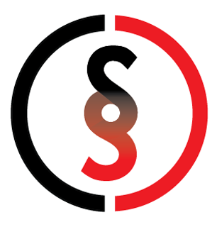

Team S.O.S. VR Introduction
We all know that natural disasters and accidents take a huge toll on us and the people we love. Although we cannot prevent these kind of accidents (Atleast not yet), we can use our tools and technology to aid us in these situations.
That’s what we are trying to achieve here specifically by using robots. Our main goal is to develop basic modules that can later be used in a bigger framework and interact with each other.
The team description paper briefly explains these modules and the framework that we are prototyping to optimize them with respect to the tasks in the challenge. Therefore, as discussed in the “future of robot rescue simulation” workshop, our team has designed a new structure of ROS framework and Gazebo simulation environment to work on USAR challenges.
Team Descriptions and Technical Reports
Current Team Members
Past Team Members
Honors and Awards
- 2nd Place, Robocup, 2017 > Official RoboCup 2017 results
- Best In Class of Improvement, IranOpen, 2017 > Official RoboCup IranOpen 2017 results
- 1st Place, IranOpen, 2017 > Official RoboCup IranOpen 2017 results
- 3rd Place, Robocup, 2016 > Official RoboCup 2016 results
- 1st Place, Robocup, 2015 > Official RoboCup 2015 results
- 1st Place, Robocup, 2014 > Official RoboCup 2014 results
- 2nd Place, Robocup, 2013 > Official RoboCup 2013 results
- 3rd Place, IranOpen, 2013
- 3rd Place, Robocup, 2012
- 2nd Place, IranOpen, 2012
- 1st Place, Khwarizmi National Robotics Award, 2010
- 1st Place, IranOpen, 2010
- 1st Place, Khwarizmi National Robotics Award, 2009
- 1st Place, Robocup, 2009
- 4th Place, Robocup, 2007
- 1st Place, Robocup Base Section, 2004
- 3rd Place, Robocup, 2002
Contact
Call Number: +98 919 476 18 30